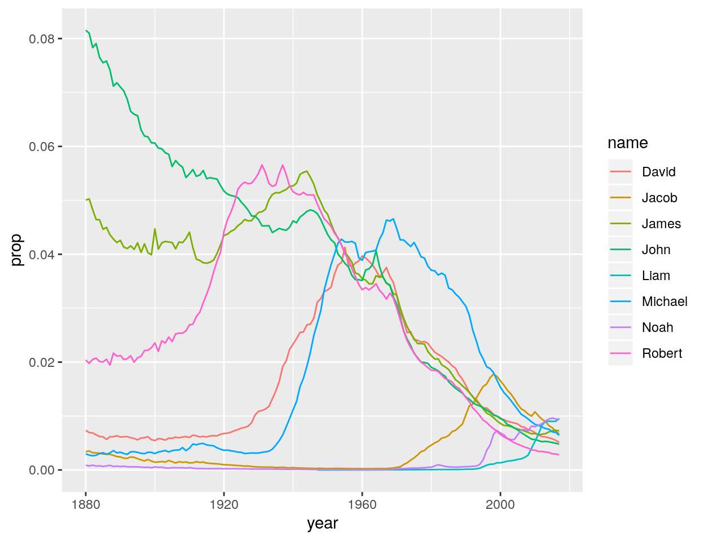

In this case study, you will identify the most popular American names from 1880 to 2015. While doing this, you will master three more dplyr functions:
mutate(), group_by(), and summarize(), which help you use your data to compute new variables and summary statisticsThese are some of the most useful R functions for data science, and this tutorial provides everything you need to learn them.
This tutorial uses the core tidyverse packages, including ggplot2, tibble, and dplyr, as well as the babynames package. All of these packages have been pre-installed and pre-loaded for your convenience.
Click the Next Topic button to begin.
Let’s use babynames to anwser a different question: what are the most popular names of all time?
This question seems simple enough, but to answer it we need to be more precise: how do you define “the most popular” names? Try to think of several definitions and then click Continue. After the Continue button, I will suggest two definitions of my own.
I suggest that we focus on two definitions of popular, one that uses sums and one that uses ranks:
This raises a question:
Every data frame that you meet implies more information than it displays. For example, babynames does not display the total number of children who had your name, but babynames certainly implies what that number is. To discover the number, you only need to do a calculation:
babynames %>%
filter(name == "Garrett", sex == "M") %>%
summarise(total = sum(n))## # A tibble: 1 x 1
## total
## <int>
## 1 129759dplyr provides three functions that can help you reveal the information implied by your data:
summarise()group_by()mutate()Like select(), filter() and arrange(), these functions all take a data frame as their first argument and return a new data frame as their output, which makes them easy to use in pipes.
Let’s master each function and use them to analyze popularity as we go.
summarise() takes a data frame and uses it to calculate a new data frame of summary statistics.
To use summarise(), pass it a data frame and then one or more named arguments. Each named argument should be set to an R expression that generates a single value. Summarise will turn each named argument into a column in the new data frame. The name of each argument will become the column name, and the value returned by the argument will become the column contents.
I used summarise() above to calculate the total number of boys named “Garrett”, but let’s expand that code to also calculate
max - the maximum number of boys named “Garrett” in a single yearmean - the mean number of boys named “Garrett” per yearbabynames %>%
filter(name == "Garrett", sex == "M") %>%
summarise(total = sum(n), max = max(n), mean = mean(n))## # A tibble: 1 x 3
## total max mean
## <int> <int> <dbl>
## 1 129759 5840 940.Don’t let the code above fool you. The first argument of summarise() is always a data frame, but when you use summarise() in a pipe, the first argument is provided by the pipe operator, %>%. Here the first argument will be the data frame that is returned by babynames %>% filter(name == "Garrett", sex == "M").
Use the code chunk below to compute three statistics:
If you cannot think of an R function that would compute each statistic, click the Hint/Solution button.
babynames %>%
filter(name == "Garrett", sex == "M") %>%
summarise(total = sum(n), max = max(n), mean = mean(n))So far our summarise() examples have relied on sum(), max(), and mean(). But you can use any function in summarise() so long as it meets one criteria: the function must take a vector of values as input and return a single value as output. Functions that do this are known as summary functions and they are common in the field of descriptive statistics. Some of the most useful summary functions include:
mean(x), median(x), quantile(x, 0.25), min(x), and max(x)sd(x), var(x), IQR(x), and mad(x)first(x), nth(x, 2), and last(x)n_distinct(x) and n(), which takes no arguments, and returns the size of the current group or data frame.sum(!is.na(x)), which counts the number of TRUEs returned by a logical test; mean(y == 0), which returns the proportion of TRUEs returned by a logical test.Let’s apply some of these summary functions. Click Continue to test your understanding.
“Khaleesi” is a very modern name that appears to be based on the Game of Thrones TV series, which premiered on April 17, 2011. In the chunk below, filter babynames to just the rows where name == “Khaleesi”. Then use summarise() and a summary function to return the first value of year in the data set.
babynames %>%
filter(name == "Khaleesi") %>%
summarise(year = first(year))In the chunk below, use summarise() and a summary function to return a data frame with two columns:
n that displays the total number of rows in babynamesdistinct that displays the number of distinct names in babynamesWill these numbers be different? Why or why not?
babynames %>%
summarise(n = n(), distinct = n_distinct(name))"Good job! The two numbers are different because most names appear in the data set more than once. They appear once for each year in which they were used."How can we apply summarise() to find the most popular names in babynames? You’ve seen how to calculate the total number of children that have your name, which provides one of our measures of popularity, i.e. the total number of children that have a name:
babynames %>%
filter(name == "Garrett", sex == "M") %>%
summarise(total = sum(n))However, we had to isolate your name from the rest of your data to calculate this number. You could imagine writing a program that goes through each name one at a time and:
Eventually, the program could combine all of the results back into a single data set. However, you don’t need to write such a program; this is the job of dplyr’s group_by() function.
group_by() takes a data frame and then the names of one or more columns in the data frame. It returns a copy of the data frame that has been “grouped” into sets of rows that share identical combinations of values in the specified columns.
For example, the result below is grouped into rows that have the same combination of year and sex values: boys in 1880 are treated as one group, girls in 1880 as another group and so on.
babynames %>%
group_by(year, sex)## # A tibble: 1,924,665 x 5
## # Groups: year, sex [276]
## year sex name n prop
## <dbl> <chr> <chr> <int> <dbl>
## 1 1880 F Mary 7065 0.0724
## 2 1880 F Anna 2604 0.0267
## 3 1880 F Emma 2003 0.0205
## 4 1880 F Elizabeth 1939 0.0199
## 5 1880 F Minnie 1746 0.0179
## 6 1880 F Margaret 1578 0.0162
## 7 1880 F Ida 1472 0.0151
## 8 1880 F Alice 1414 0.0145
## 9 1880 F Bertha 1320 0.0135
## 10 1880 F Sarah 1288 0.0132
## # … with 1,924,655 more rowsBy itself, group_by() doesn’t do much. It assigns grouping criteria that is stored as metadata alongside the original data set. If your dataset is a tibble, as above, R will tell you that the data is grouped at the top of the tibble display. In all other aspects, the data looks the same.
However, when you apply a dplyr function like summarise() to grouped data, dplyr will execute the function in a groupwise manner. Instead of computing a single summary for the entire data set, dplyr will compute individual summaries for each group and return them as a single data frame. The data frame will contain the summary columns as well as the columns in the grouping criteria, which makes the result decipherable:
babynames %>%
group_by(year, sex) %>%
summarise(total = sum(n))# A tibble: 276 x 3
# Groups: year [138]
year sex total
<dbl> <chr> <int>
1 1880 F 90993
2 1880 M 110491
3 1881 F 91953
4 1881 M 100743
5 1882 F 107847
6 1882 M 113686
7 1883 F 112319
8 1883 M 104627
9 1884 F 129020
10 1884 M 114442
# … with 266 more rowsTo understand exactly what group_by() is doing, remove the line group_by(year, sex) %>% from the code above and rerun it. How do the results change?
If you apply summarise() to grouped data, summarise() will return data that is grouped in a similar, but not identical fashion. summarise() will remove the last variable in the grouping criteria, which creates a data frame that is grouped at a higher level. For example, this summarise() statement receives a data frame that is grouped by year and sex, but it returns a data frame that is grouped only by year.
babynames %>%
group_by(year, sex) %>%
summarise(total = sum(n))## # A tibble: 276 x 3
## # Groups: year [138]
## year sex total
## <dbl> <chr> <int>
## 1 1880 F 90993
## 2 1880 M 110491
## 3 1881 F 91953
## 4 1881 M 100743
## 5 1882 F 107847
## 6 1882 M 113686
## 7 1883 F 112319
## 8 1883 M 104627
## 9 1884 F 129020
## 10 1884 M 114442
## # … with 266 more rowsIf only one grouping variable is left in the grouping criteria, summarise() will return an ungrouped data set. This feature let’s you progressively “unwrap” a grouped data set:
If we add another summarise() to our pipe,
babynames %>%
group_by(year, sex) %>%
summarise(total = sum(n)) %>%
summarise(total = sum(total))## # A tibble: 138 x 2
## year total
## <dbl> <int>
## 1 1880 201484
## 2 1881 192696
## 3 1882 221533
## 4 1883 216946
## 5 1884 243462
## 6 1885 240854
## 7 1886 255317
## 8 1887 247394
## 9 1888 299473
## 10 1889 288946
## # … with 128 more rowsIf you wish to manually remove the grouping criteria from a data set, you can do so with ungroup().
babynames %>%
group_by(year, sex) %>%
ungroup()## # A tibble: 1,924,665 x 5
## year sex name n prop
## <dbl> <chr> <chr> <int> <dbl>
## 1 1880 F Mary 7065 0.0724
## 2 1880 F Anna 2604 0.0267
## 3 1880 F Emma 2003 0.0205
## 4 1880 F Elizabeth 1939 0.0199
## 5 1880 F Minnie 1746 0.0179
## 6 1880 F Margaret 1578 0.0162
## 7 1880 F Ida 1472 0.0151
## 8 1880 F Alice 1414 0.0145
## 9 1880 F Bertha 1320 0.0135
## 10 1880 F Sarah 1288 0.0132
## # … with 1,924,655 more rowsAnd, you can override the current grouping information with a new call to group_by().
babynames %>%
group_by(year, sex) %>%
group_by(name)## # A tibble: 1,924,665 x 5
## # Groups: name [97,310]
## year sex name n prop
## <dbl> <chr> <chr> <int> <dbl>
## 1 1880 F Mary 7065 0.0724
## 2 1880 F Anna 2604 0.0267
## 3 1880 F Emma 2003 0.0205
## 4 1880 F Elizabeth 1939 0.0199
## 5 1880 F Minnie 1746 0.0179
## 6 1880 F Margaret 1578 0.0162
## 7 1880 F Ida 1472 0.0151
## 8 1880 F Alice 1414 0.0145
## 9 1880 F Bertha 1320 0.0135
## 10 1880 F Sarah 1288 0.0132
## # … with 1,924,655 more rowsThat’s it. Between group_by(), summarise(), and ungroup(), you have a toolkit for taking groupwise summaries of your data at various levels of grouping.
You now know enough to calculate the most popular names by total children (it may take some strategizing, but you can do it!).
In the code chunk below, use group_by(), summarise(), and arrange() to display the ten most popular names. Compute popularity as the total number of children of a single gender given a name. In other words, the total number of boys named “Kelly” should be computed separately from the total number of girls named “Kelly”.
babynames %>%
group_by(name, sex) %>%
summarise(total = sum(n)) %>%
arrange(desc(total))Let’s examine how the popularity of popular names has changed over time. To help us, I’ve made top_10, which is a version of babynames that is trimmed down to just the ten most popular names from above.
## # A tibble: 1,380 x 5
## year sex name n prop
## <dbl> <chr> <chr> <int> <dbl>
## 1 1880 F Mary 7065 0.0724
## 2 1880 M John 9655 0.0815
## 3 1880 M William 9532 0.0805
## 4 1880 M James 5927 0.0501
## 5 1880 M Charles 5348 0.0452
## 6 1880 M Joseph 2632 0.0222
## 7 1880 M Robert 2415 0.0204
## 8 1880 M David 869 0.00734
## 9 1880 M Richard 728 0.00615
## 10 1880 M Michael 354 0.00299
## # … with 1,370 more rowsUse the code block below to plot a line graph of prop vs year for each name in top_10. Be sure to color the lines by name to make the graph interpretable.
top_10 %>%
ggplot() +
geom_line(aes(x = year, y = prop, color = name))Now use top_10 to plot n vs year for each of the names. How are the plots different? Why might that be? How does this affect our decision to use total children as a measure of popularity?
top_10 %>%
ggplot() +
geom_line(aes(x = year, y = n, color = name))"Good job! This graph shows different trends than the one above, now let's consider why."Why might there be a difference between the proportion of children who receive a name over time, and the number of children who receive the name?
An obvious culprit could be the total number of children born per year. If more children are born each year, the number of children who receive a name could grow even if the proportion of children given that name declines.
Test this theory in the chunk below. Use babynames and groupwise summaries to compute the total number of children born each year and then to plot that number vs. year in a line graph.
babynames %>%
group_by(year) %>%
summarise(n = sum(n)) %>%
ggplot() +
geom_line(aes(x = year, y = n))The graph above suggests that our first definition of popularity is confounded with population growth: the most popular names in 2015 likely represent far more children than the most popular names in 1880. The total number of children given a name may still be the best definition of popularity to use, but it will overweight names that have been popular in recent years.
There is also evidence that our definition is confounded with a gender effect: only one of the top ten names was a girl’s name.
If you are concerned about these things, you might prefer to use our second definition of popularity, which would give equal representation to each year and gender:
To use this definition, we could:
To do this, we will need to learn one last dplyr function.
mutate() uses a data frame to compute new variables. It then returns a copy of the data frame that includes the new variables. For example, we can use mutate() to compute a percent variable for babynames. Here percent is just the prop multiplied by 100 and rounded to two decimal places.
babynames %>%
mutate(percent = round(prop * 100, 2))## # A tibble: 1,924,665 x 6
## year sex name n prop percent
## <dbl> <chr> <chr> <int> <dbl> <dbl>
## 1 1880 F Mary 7065 0.0724 7.24
## 2 1880 F Anna 2604 0.0267 2.67
## 3 1880 F Emma 2003 0.0205 2.05
## 4 1880 F Elizabeth 1939 0.0199 1.99
## 5 1880 F Minnie 1746 0.0179 1.79
## 6 1880 F Margaret 1578 0.0162 1.62
## 7 1880 F Ida 1472 0.0151 1.51
## 8 1880 F Alice 1414 0.0145 1.45
## 9 1880 F Bertha 1320 0.0135 1.35
## 10 1880 F Sarah 1288 0.0132 1.32
## # … with 1,924,655 more rowsThe syntax of mutate is similar to summarise(). mutate() takes first a data frame, and then one or more named arguments that are set equal to R expressions. mutate() turns each named argument into a column. The name of the argument becomes the column name and the result of the R expression becomes the column contents.
Use mutate() in the chunk below to create a births column, the result of dividing n by prop. You can think of births as a sanity check; it uses each row to double check the number of boys or girls that were born each year. If all is well, the numbers will agree across rows (allowing for rounding errors).
babynames %>%
mutate(births = n / prop)Like summarise(), mutate() works in combination with a specific type of function. summarise() expects summary functions, which take vectors of input and return single values. mutate() expects vectorized functions, which take vectors of input and return vectors of values.
In other words, summary functions like min() and max() won’t work well with mutate(). You can see why if you take a moment to think about what mutate() does: mutate() adds a new column to the original data set. In R, every column in a dataset must be the same length, so mutate() must supply as many values for the new column as there are in the existing columns.
If you give mutate() an expression that returns a single value, it will follow R’s recycling rules and repeat that value as many times as needed to fill the column. This can make sense in some cases, but the reverse is never true: you cannot give summarise() a vectorized function; summarise() needs its input to return a single value.
What are some of R’s vectorized functions? Click Continue to find out.
Some of the most useful vectorised functions in R to use with mutate() include:
+, -, *, /, ^. These are all vectorised, using R’s so called “recycling rules”. If one vector of input is shorter than the other, it will automatically be repeated multiple times to create a vector of the same length.%/% (integer division) and %% (remainder)<, <=, >, >=, !=log(x), log2(x), log10(x)lead(x), lag(x)cumsum(x), cumprod(x), cummin(x), cummax(x), cummean(x)min_rank(x), row_number(x), dense_rank(x), percent_rank(x), cume_dist(x), ntile(x)For ranking, I recommend that you use min_rank(), which gives the smallest values the top ranks. To rank in descending order, use the familiar desc() function, e.g.
min_rank(c(50, 100, 1000))## [1] 1 2 3min_rank(desc(c(50, 100, 1000)))## [1] 3 2 1Let’s practice by ranking the entire dataset based on prop. In the chunk below, use mutate() and min_rank() to rank each row based on its prop value, with the highest values receiving the top ranks.
babynames %>%
mutate(rank = min_rank(desc(prop)))In the previous exercise, we assigned rankings across the entire data set. For example, with the exception of ties, there was only one 1 in the entire data set, only one 2, and so on. To calculate a popularity score across years, you will need to do something different: you will need to assign rankings within groups of year and sex. Now there will be one 1 in each group of year and sex.
To rank within groups, combine mutate() with group_by(). Like dplyr’s other functions, mutate() will treat grouped data in a group-wise fashion.
Add group_by() to our code from above, to calculate ranking within year and sex combinations. Do you notice the numbers change?
babynames %>%
mutate(rank = min_rank(desc(prop)))babynames %>%
group_by(year, sex) %>%
mutate(rank = min_rank(desc(prop)))group_by() provides the missing piece for calculating our second measure of popularity. In the code chunk below,
babynames by year and sexpropname and sexbabynames %>%
group_by(year, sex) %>%
mutate(rank = min_rank(desc(prop))) %>%
group_by(name, sex) %>%
summarise(score = median(rank)) %>%
arrange(score)"Congratulations! Our second provides a different picture of popularity. Here we see names that have been consistently popular over time, including new entries like Elizabeth and Thomas."In this primer, you learned three functions for isolating data within a table:
select()filter()arrange()You also learned three functions for deriving new data from a table:
summarise()group_by()mutate()Together these six functions create a grammar of data manipulation, a system of verbs that you can use to manipulate data in a sophisticated, step-by-step way. These verbs target the everyday tasks of data analysis. No matter which types of data you work with, you will discover that:
The six dplyr functions help you work with these realities by isolating and revealing the information contained in your data. In fact, dplyr provides more than six functions for this grammar: dplyr comes with several functions that are variations on the themes of select(), filter(), summarise(), and mutate(). Each follows the same pipeable syntax that is used throughout dplyr. If you are interested, you can learn more about these peripheral functions in the dplyr cheatsheet.
Apply your knowledge of dplyr to do the following two challenges.
How many distinct boys names acheived a rank of Number 1 in any year?
babynames %>%
group_by(year, sex) %>%
mutate(rank = min_rank(desc(n))) %>%
filter(rank == 1, sex == "M") %>%
ungroup() %>%
summarise(distinct = n_distinct(name))How many distinct girls names acheived a rank of Number 1 in any year?
babynames %>%
group_by(year, sex) %>%
mutate(rank = min_rank(desc(n))) %>%
filter(rank == 1, sex == "F") %>%
ungroup() %>%
summarise(distinct = n_distinct(name))number_ones is a vector of every boys name to acheive a rank of one.
number_ones## [1] "John" "Robert" "James" "Michael" "David" "Jacob" "Noah"
## [8] "Liam"Use number_ones with babynames to recreate the plot below, which shows the popularity over time for every name in number_ones.

babynames %>%
filter(name %in% number_ones, sex == "M") %>%
ggplot() +
geom_line(aes(x = year, y = prop, color = name))Which gender uses more names?
In the chunk below, calculate and then plot the number of distinct names used each year for boys and girls. Place year on the x axis, the number of distinct names on they y axis and color the lines by sex.
babynames %>%
group_by(year, sex) %>%
summarise(n_names = n_distinct(name)) %>% # or summarise(n_names = n())
ggplot() +
geom_line(aes(x = year, y = n_names, color = sex))Let’s make sure that we’re not confounding our search with the total number of boys and girls born each year. With the chunk below, calculate and then plot over time the total number of boys and girls by year. Is the relative number of boys and girls constant?
babynames %>%
group_by(year, sex) %>%
summarise(n = sum(n)) %>%
ggplot() +
geom_line(aes(x = year, y = n, color = sex))Hmm. Sometimes there are more girls and sometimes more boys. In addition, the entire population has been grown over time. Let’s account for this weith a new metric: the average number of children per name.
If girls have a smaller number of children per name, that would imply that they use more names overall (and vice versa).
In the chunk below, calculate and plot the average number of children per name by year and sex over time. How do you interpret the results?
babynames %>%
group_by(year, sex) %>%
summarise(per_name = mean(n)) %>%
ggplot() +
geom_line(aes(x = year, y = per_name, color = sex))"Good job! In recent years, there are fewer girls (on average) given any particular name than boys. This suggests that there is more variety in girls names than boys names once you account for population. Interestingly, the number of children per name has gone down steeply for each gender since the 1960's, even though the total population has continued to increase. This suggests that there is a greater variety of names today than in the past."Congratulations! You can use dplyr’s grammar of data manipulation to access any data associated with a table—even if that data is not currently displayed by the table.
In other words, you now know how to look at data in R, as well as how to access specific values, calculate summary statistics, and compute new variables. When you combine this with the visualization skills that you learned in the ggplot tutorials, you have everything that you need to begin exploring data in R.
The next tutorials will teach you the last of three basic skills for working with R: